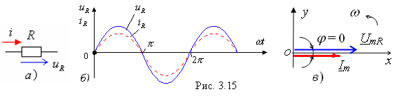

2.3.1.3. Сдвиг фаз между напряжением и током в элементе R
|
Первое слагаемое в (2.30) есть напряжение uR на резисторе, амплитуда которого UmR = RIm (Im = UmR/R), а сдвиг фаз между напряжением uR и током iR
т. е. ток iR в резисторе совпадает по фазе с напряжением uR (рис. 2.15, б и в ).  |
|||